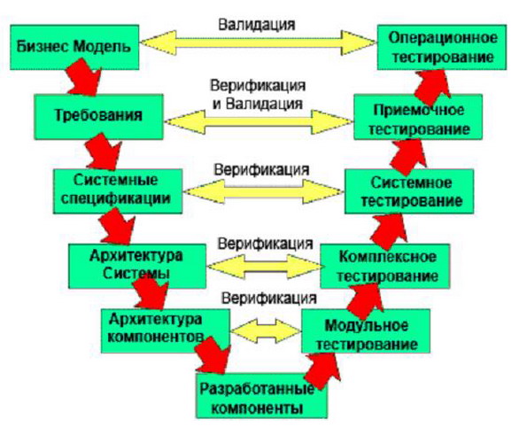

Тема 7. Модель тестирования ПО на основе обобщенной модели ЖЦ ПО
Обобщенная модель жизненного цикла тестирования ПО может быть представлена в виде буквы V, как показано на рис. 4. Такая конценпция получила соответствующее название - V-модель.
Это один из способов продемонстрировать, как соотносятся процессы тестирования с основными процессами проектирования и разработки. В V-модели основные этапы ЖЦ ПО образуют левую сторону “V”, кодирование находится в самой нижней точке диаграммы, а тестирование образует ее правую сторону. Для простоты изложения, вид деятельности, подобный сопровождению, на диаграмме не показан.

Рис. 4. V-образная модель обобщенного ЖЦ ТП
Следует уточнить, что, точно так же как обобщенная модель ЖЦ ПО не определяет строгой последовательности этапов разработки и не исключает цикличность и пересмотр всех или некоторых из них, так и “V”-модель – лишь показывает основные этапы тестирования ПО и их связь с этапами разработки. Обобщенная модель ЖЦ тестирования ПО может быть преобразована к виду конкретной модели ЖЦ ПО. Так, при работе по итеративной или спиральной модели, “V”-модель тестирования приобретает итеративную природу, как и другие процессы разработки. Это означает, что обозначенные виды (уровни) тестирования могут неоднократно повторятся в процессе ЖЦ ПО в каждой итерации разработки, а также – в качестве регрессионного тестирования уже разработанных и протестированных на предыдущих итерациях элементов системы.
Таким образом, на основе современных методологий, стандартов качества и стандартов разработки ПО мы систематизировали общее понимание тестирования и определили обобщенную модель ЖЦ ТП, которая обладает следующими качествами:
Таким образом, тестирование вправе называться самостоятельной дисциплиной, которая имеет свои цели, задачи, роли, виды, стратегии, методы, критерии, свою методологию и технологию.